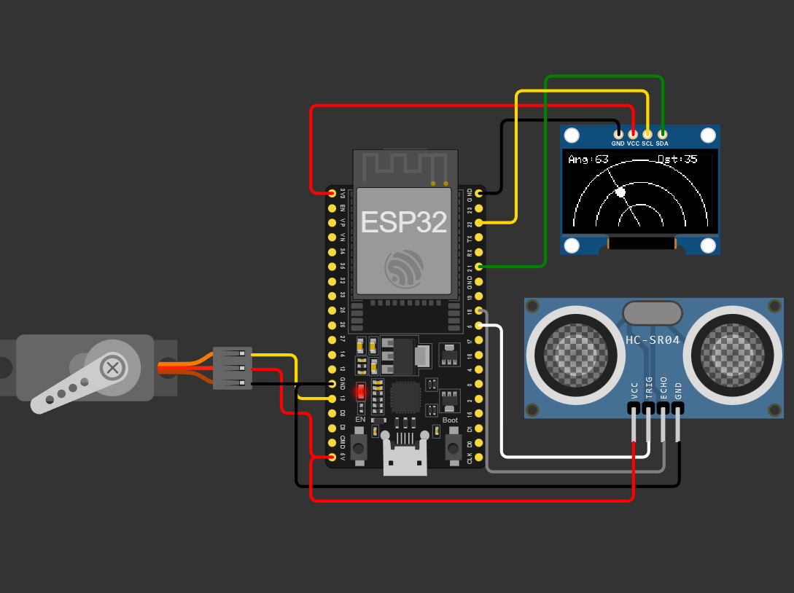
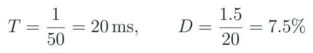

Taller 1: servomotor y explorador ultrasónico
Coordinar una orden de posición con una lectura de distancia y conservar un registro coherente.
Tres cosas diferentes: mando, posición y medida
El proyecto de radar del laboratorio coordina un servo con un sensor ultrasónico. El nombre sirve para presentar el explorador, pero la medición es acústica. El programa puede ordenar un ángulo y dibujar una línea; eso no demuestra que el mecanismo ya alcanzó esa posición cuando se adquirió el dato. Nuestra primera tarea de integración es reconocer esa diferencia y guardar qué ocurrió en cada etapa.

En una carga de sensor, la orientación del soporte forma parte del significado de la medida. Un registro útil puede contener orden, tiempo de orden, tiempo de adquisición, distancia y estado. Si no hay un sensor de posición independiente, se identifica la posición como ordenada o estimada. Esta precisión del lenguaje ayuda a tomar decisiones de montaje sin exigir instrumentación avanzada.
Ancho de pulso y respuesta del servo

Un servo convencional interpreta el ancho de un pulso repetido según su interfaz. Los límites y el sentido dependen del modelo y del montaje. No se enseña que cualquier servo tenga exactamente 0° a 180° entre 1 y 2 ms. En la práctica se comienza en una posición sin interferencia y con un intervalo permitido por su documentación. El archivo c08_servo usa un margen de ejercicio que el docente debe contrastar con el dispositivo.
Una orden y lo que falta conocer
| Dato | Significado | Comprobación |
|---|---|---|
| Pulso / μs | Mando eléctrico | Señal observada |
| Ángulo solicitado | Convención del programa | Calibración del montaje |
| Posición real | Estado del mecanismo | Observación o sensor |
La cuenta de duty depende de la resolución configurada. Con 16 bits y periodo de 20000 μs, un pulso de 1500 μs corresponde aproximadamente a 4915 cuentas. No se copia ese código a una configuración de 8 bits. La misma fracción exige otro número porque cambió la representación digital.
Alimentación y montaje de banco
El servo necesita energía para su motor interno y puede demandar corriente variable al arrancar o sostener carga. La señal del GPIO no aporta esa potencia. En el banco se prepara una fuente adecuada para el actuador y una referencia de señal compatible. El positivo de esa fuente no se une arbitrariamente con otras alimentaciones de la placa. El docente presenta el circuito completo antes de realizar movimientos.
Separación de funciones
| Elemento | Trabajo | Qué se comprueba |
|---|---|---|
| GPIO13 | Orden al servo | Nivel y pulso |
| Fuente del servo | Energía del actuador | Tensión y capacidad |
| GND de referencia | Interpretación de señal | Conexión definida |
| Soporte mecánico | Movimiento permitido | Sin interferencias |
Reinicio al mover
El programa funciona quieto y la placa se reinicia cuando se mueve el servo. ¿Qué revisas antes de cambiar el algoritmo?
Ver razonamiento del caso
La alimentación, la demanda del actuador, las conexiones y la referencia del montaje. El síntoma puede pertenecer al suministro de energía; no se resuelve suponiendo que todo es un error de programación.
Cada equipo identifica el recorrido que puede observar y los puntos donde el soporte podría interferir. No se fuerza un extremo para “calibrar” una pieza. El propósito es producir órdenes repetibles dentro de un intervalo comprobado y conservar la condición de alimentación del ensayo.
Secuencia del explorador
Tres momentos de una exploración
// Estado 1: ordenar una posicion permitida
commandServo(target);
// Estado 2: esperar la condicion de adquisicion
// Estado 3: adquirir y guardar el par coherente
record(target, sampleTime, distance, valid);El fragmento describe una secuencia; las funciones representan tareas que el equipo debe relacionar con su proyecto. No se presenta como un firmware completo listo para compilar. Primero se prueba el servo con c08_servo y el sensor con c07_distancia. Después se integra un pequeño conjunto de posiciones. La condición para adquirir se define según el montaje y la evidencia disponible.
La práctica del brazo robótico sirve como variante de mando y filtrado del potenciómetro. Su señal se puede reutilizar para una base de cámara, pero no basta cambiar el dibujo del proyecto para conocer la orientación de una carga. El equipo explica qué variable mide realmente y qué movimiento solo ordena. Esta distinción se conservará cuando aparezcan motores con encoder.
Agenda de cuatro horas y evidencias
Taller presencial 1
| Minutos | Trabajo | Producto |
|---|---|---|
| 0–25 | Revisión de esquemas | Mapa del equipo |
| 25–70 | Servo y señales | Intervalo comprobado |
| 70–120 | Ultrasonido y nivel | Referencia de distancia |
| 120–175 | Integración por estados | Registro coherente |
| 175–215 | Pruebas y diagnóstico | Fallo explicado |
| 215–240 | Demostración y cierre | Entrega del equipo |
- Comprueba por separado cada subsistema antes de integrar.
- Ordena tres posiciones permitidas y registra qué has observado.
- Relaciona cada distancia con la orden y el instante que le corresponden.
- Trata un caso sin eco y conserva el estado en lugar de inventar distancia.
- Intercambia roles de cableado, programación, medida y registro.
- Entrega una conclusión sobre alimentación y otra sobre sincronización.
Los alumnos con kit trabajan con su material confirmado. Los demás usan el simulador y los bancos compartidos programados para el taller. En el registro se identifica qué comprobación se realizó físicamente y cuál pertenece a una ejecución de simulación. El resultado común del curso es la explicación del sistema y de su evidencia, con el modo de trabajo documentado.
Qué se acepta al cerrar el taller
La entrega debe permitir que otra persona reconstruya el ensayo: esquema vigente, configuración de señal, intervalo permitido, código identificado y una tabla de posiciones y lecturas. Una animación atractiva no sustituye ese registro. Tampoco se exige una exploración de muchos puntos antes de resolver tres casos coherentes. La calidad se reconoce en que el equipo puede explicar de dónde salió cada dato y qué falta comprobar.
Misma figura, distinto registro
Dos equipos dibujan el mismo barrido. Uno guarda solo distancias y el otro guarda orden, instante y estado. ¿Cuál permite investigar una lectura fuera de secuencia?
Ver razonamiento del caso
El segundo conserva las referencias necesarias. La figura por sí sola no permite saber cuándo se adquirió cada dato.
Para investigar, compara el servo con el stepper del proyecto 13: señal de mando, energía, estado que se conoce y mecanismo de transmisión. Deja el stepper como ampliación hasta disponer de motor y driver coherentes. La siguiente parte del curso profundiza en potencia, medición de movimiento y realimentación, usando un banco DC de baja tensión.
Práctica guiada
- Presentar el esquema completo y el intervalo mecánico antes de mover.
- Verificar servo y sensor de manera independiente.
- Integrar tres posiciones con tiempo y validez en el registro.
- Demostrar un fallo y explicar la evidencia de cada equipo.
Preguntas de cierre
¿Ordenar 90° demuestra que el mecanismo llegó?
No. Se distingue la orden de una posición observada o medida.
¿Por qué no usar el GPIO como alimentación?
El GPIO comunica la señal; la energía del actuador exige una etapa de alimentación adecuada.
¿Qué debe acompañar una distancia del barrido?
La orden o posición de referencia, el instante y el estado de validez.
Entrega
Esquema revisado, tres registros coherentes y diagnóstico de una condición de fallo.
Proyectos MECRO relacionados
- 11. Radar de Exploración · Núcleo. Barrido servo y distancia Abrir referencia Wokwi
- 12. Brazo Robótico (Sim) · Extensión. Brazo de banco y calibración de servo Abrir referencia Wokwi
Fuentes para ampliar
[MECRO] MECRO. Laboratorio Electrónica con ESP32: veinte proyectos.
[SERVO] Wokwi. Referencia del servomotor.
[HC] Wokwi. Referencia del sensor HC-SR04.
[BOARD] Espressif Systems. ESP32-DevKitC V4: guía de la placa.
[PWM] Espressif Systems. Arduino-ESP32: LEDC.